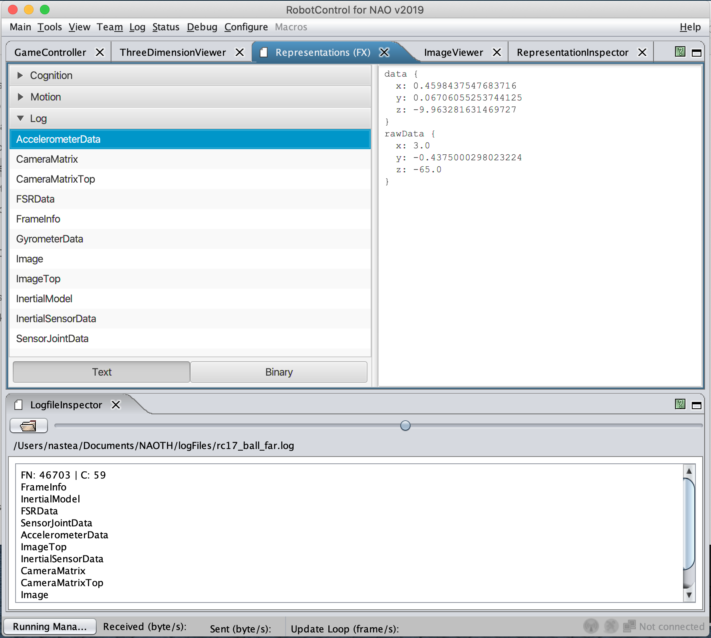
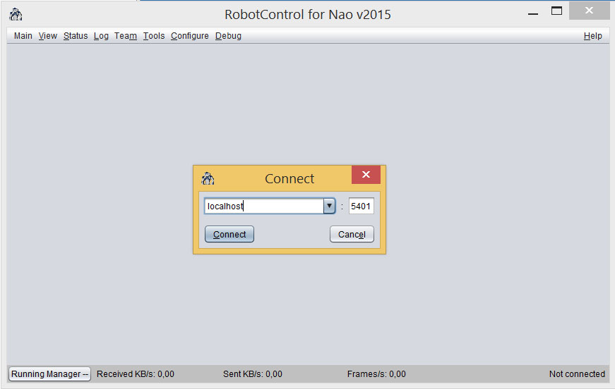
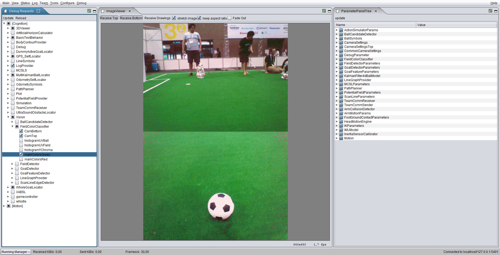

Prerequisites:
- You should be able to compile the Commons, NaothSoccer and LogSimulator projects on your system
- You can run RobotControl
1 Get access to logfiles¶
There are two ways to access the folder with the logfiles and videos of our games and tests.
- You can get read-only access to the logs (without the need of the ssh access) at
https://logs.naoth.de/
- You can get access to the university's server or any other gruenau server via ssh:
ssh naoth@gruenau6.informatik.hu-berlin.de
The logfiles are located under
/vol/repl261-vol4/naoth/logs
In order to be able to log in as user naoth your public ssh key has to be registered
in the authorized_keys file of the user naoth. Every teammember who already has
access to the naoth user can add you to the list located in
/vol/home-vol1/wissen/naoth/.ssh
For Linux use ssh-keygen and on Windows use cygwin's ssh-keygen.
Send your public key to a teammember who can add your key.
2 Work with logfiles in RobotControl¶
Run a logfile in the LogSimulator¶
For this tutorial use the following file
Download a logfile and start the LogSimulator in Debug with the name of the logfile as argument. In the Console window you can press p to play the logfile and l to loop the logfile. More Controls for the LogSimulator are displayed in the console window.
Start RobotControl¶
A detailed description of the RobotControl can be found in the Teamreport. There are multiple ways to start RobotControl:
-
Open NetBeans, create a
new project, choose theRobotControl folder, pressBuildand thenRun. -
In the terminal:
orcd naoth-2020/RobotControl ./granleworcd naoth-2020/RobotControl/dist ./robotcontrolNote: The presented examples for running shell scripts work for macOS and may be different for another OS.cd naoth-2020/RobotControl/dist/lib java -jar RobotControl.jar -
In the
Finder, go tonaoth-2020/RobotControland double-click thegranlewscript. Same for therobotcontrolscript located innaoth-2020/RobotControl/dist.
View Representations in RobotControl¶
Logfile Inspector¶
Depending on what you want to do with the logfiles, you can view them in different ways. If you want to check if the logfiles contain any data and quickly look through it, you can use the Logfile Inspector, which gives you the possibility to view the data (e.g. images, sensor values) in RobotControl:
-
Open RobotControl and go offline (disconnect from any host). Uncheck the checkmark under
Main -> Enforce Connection, otherwise you will be prompted to connect to a host every time you open a new dialog. -
press
Alt+F(orOption+Ffor mac) -
search for `Inspector'
-
drag the 'LogfileInspector` window to the bottom of the RobotControl window (for convenience)
-
Drag and drop the logfile you want to view into the 'LogfileInspector` window
-
For viewing images go to
View -> Imageand pressReceive Topand/orReceive Bottom, depending on which camera you are interested in. You can scroll through the frames by moving left and right the bar highlighted in the picture:  -
To view sensor data other than images, press
Alt+Fagain and search forRepresentations (FX)(or go toStatus -> Representations (FX)). -
Press the
Logtab and choose the sensor data you want to view:
LogSimulator¶
If you want to run robot code on the logfile, you should create a robot instance by starting the LogSimulator in the terminal, playing the logfile, and connecting RobotControl to your localhost. In this way the logfile is basically acting like a real robot, which you can observe and program via RobotControl.
-
Start the
LogSimulator:cd NaoTHSoccer ./dist/Native/logsimulator /path/to/log/file/game.log -
While the logfile plays, press
Ctrl + Kto connect to localhost with RobotControl. The port needs to be5401for the LogSimulator.
 -
Open the image dialog by clicking
View -> Image. Then pressRecieve ToporRecieve Bottomfor choosing the top or the bottom camera of the robot.
-
Go to
Status -> Representationsto view data besides the actual images. -
Additional information can be drawn on top of the images by enabling certain Debug Requests via the
Debug -> DebugRequestDialog. Such information can be the position of the ball in the image or pixel classified as green. 
In the image above the DebugRequests for showing the green pixels are enabled (on the left). On the right side of the image the ParameterTreePanel is shown.
3 Work with logfiles in python¶
3.1 Python Ecosystem¶
All python ecosystem is located in the directory
<naoth-2020 repository path>/Utils/py
- install
naothpackage
run the following command to install the naothpackage
pip install -e naoth
For more information read
<naoth-2020 repository path>/Utils/py/README.md
- [optional] Generate the protobuf messages inside the
Makefolder: Usually all necessary generated messages are contained in the repository. This step is necesary if message files were chaned (need a reference here)cd naoth-2020/NaothSoccer/Make ./premake5 --protoc
NOTE: The python messages are saves in Utils/py/naoth/naoth/pb. If you don't have the up-to-date messages, the logs can't be parsed.
3.2 Example Logfile¶
For our examples we use the following logfile
https://logs.naoth.de/2019-07-02_RC19/2019-07-04_11-00-00_Berlin%20United_vs_NaoDevils_half1/game_logs/3_93_Nao0212_190704-1112/game.log
game.log and is placed in the same directory as your scripts.
3.3 Logfiles structure¶
A logfile consists of frames and each frame contains representations, which hold various data recorded from the robot. Such data can be Images, Ball detections etc. Each Frame has a number increasing from 0. The representations can be accessed by their name. Here is an example for the structure of a logfile.
game.log
|
+--frame 0
| |
| +--FrameInfo
| +--...
+--frame 1
| |
| +--FrameInfo
| +--...
...
3.4 Reading a logfile¶
To read and parse a logfile we use the naoth.log.Reader class. More Information can be found in the file
py/naoth/naoth/log/_experimental_reader.py
The basic structure for working with logfiles is allways the same. In the following example we read the first frame from the game.log and print the frame number as well as the names of all representations in this frame.
from naoth.log import Reader
# open the logfile
with Reader('game.log') as reader:
# read all frames one by one
for frame in reader.read():
print("Frame number: {}".format(frame.number))
print("Representations:")
print(frame.get_names())
break
Output
> python print_messages.py
Frame number: 1
Representations:
dict_keys(['BehaviorStateComplete', 'RobotInfo', 'BehaviorStateSparse', 'OdometryData', 'CameraMatrix', 'CameraMatrixTop', 'GoalPercept', 'GoalPerceptTop', 'MultiBallPercept', 'BallModel', 'FieldPercept', 'FieldPerceptTop', 'ScanLineEdgelPercept', 'ScanLineEdgelPerceptTop', 'ShortLinePercept', 'RansacLinePercept', 'RansacCirclePercept2018', 'TeamMessage', 'FrameInfo'])
3.5 Reading representations¶
We extend the above example to read the content of an important Representation FrameInfo. FrameInfo contains the timestamp and the number of the frame in the actual execution cycle of the robot. (Note: this frame number doen not correspond to the number of the frame in the logfile).
from naoth.log import Reader
# open the logfile
with Reader('game.log') as reader:
# read all frames one by one
for frame in reader.read():
if 'FrameInfo' in frame:
f = frame['FrameInfo']
print(f)
break
Output
> python print_messages.py
frameNumber: 1
time: 1417
3.6 Other examples¶
Further more complex examples can be found in
Utils/py/log_parser_examples